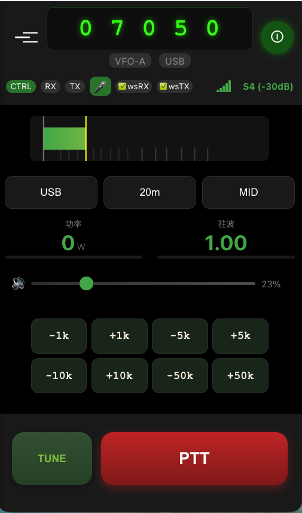
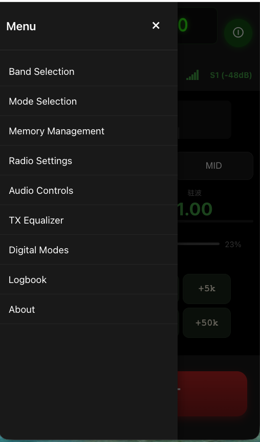
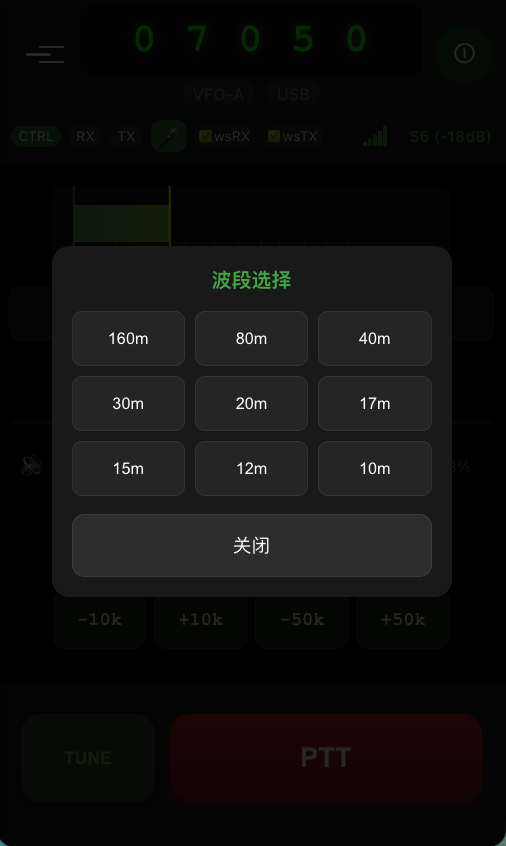
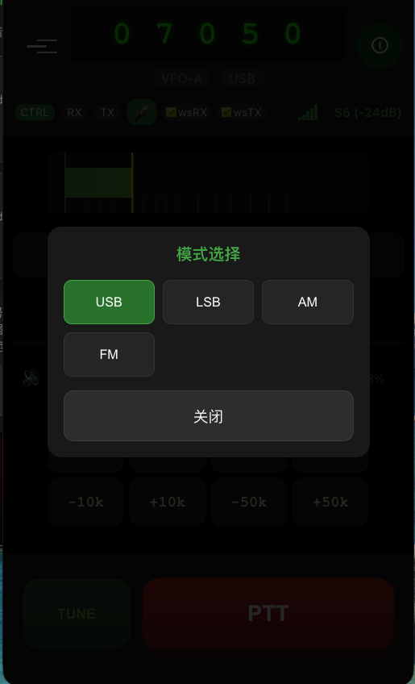
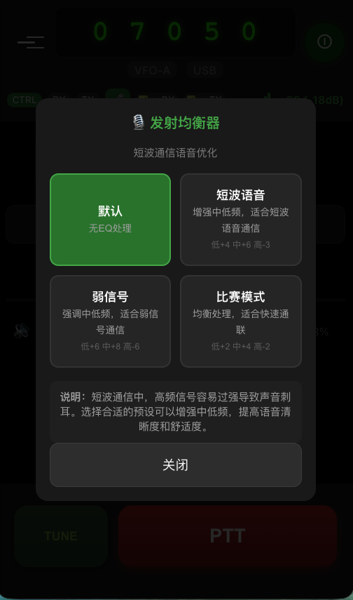
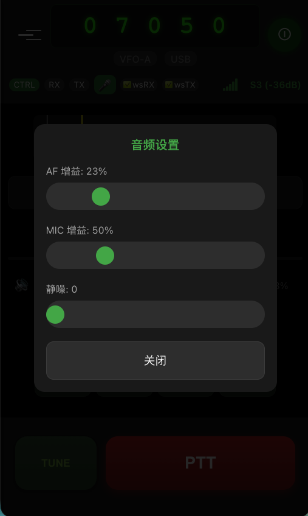

Mobile Remote Radio Control - 移动端操作指南
版本：V4.9.1 | 更新日期：2026年3月15日
在移动设备浏览器中访问：
https://<您的服务器地址>/mobile_modern.html推荐浏览器：Safari (iOS)、Chrome (Android)
首次访问会要求输入用户名和密码。请联系系统管理员获取登录凭据。
系统需要以下权限：

图1：主界面
| 区域 | 功能 |
|---|---|
| 顶部状态栏 | 电源开关、连接状态、设置入口 |
| 频率显示 | 大字体显示当前工作频率 |
| S表 | 实时信号强度指示（S0-S9+60dB） |
| 功率/SWR | ATR-1000 实时功率与驻波比 |
| PTT按钮 | 长按发射，松开接收 |

图2：菜单系统
通过菜单可访问：
| 菜单项 | 功能 |
|---|---|
| Band Selection | 波段选择 |
| Mode Selection | 模式选择 |
| Audio Controls | 音频设置 |
| TX Equalizer | 发射均衡器 |
| About | 关于信息 |
开启系统：
关闭系统：
方式一：按钮调节
+ 按钮增加频率- 按钮减少频率方式二：波段选择

图3：波段选择
通过菜单 → Band Selection 快速切换常用业余频段：

图4：模式选择
通过菜单 → Mode Selection 切换工作模式：
| 模式 | 说明 | 适用场景 |
|---|---|---|
| USB | 上边带 | 20m及以上波段 |
| LSB | 下边带 | 40m及以下波段 |
| AM | 调幅 | 调幅广播接收 |
| FM | 调频 | VHF/UHF FM通信 |
提示：当前选中模式会以绿色高亮显示。
发射操作：
注意：PTT 按钮按下时会触发震动反馈，表示发射开始。
TUNE 天调模式：
当连接 ATR-1000 设备时，主界面会实时显示：
| 参数 | 范围 | 说明 |
|---|---|---|
| 功率 | 0-200W | 前向功率 |
| SWR | 1.0-9.99 | 驻波比 |
提示：功率显示仅在发射时更新，延迟 <200ms。理想 SWR 值为 1.0。

图5：TX 均衡器
优化发射音频质量，位于菜单 → TX Equalizer。
预设模式：
| 模式 | 参数 (低/中/高) | 适用场景 |
|---|---|---|
| 默认 | 0 / 0 / 0 dB | 无处理 |
| 短波语音 | +4 / +6 / -3 dB | 常规短波通信 |
| 弱信号 | +6 / +8 / -6 dB | DX 弱信号通信 |
| 比赛模式 | +2 / +4 / -2 dB | 快速通联 |
说明：短波通信中高频信号容易过强导致声音刺耳，选择合适预设可增强中低频，提高语音清晰度。

图6：音频设置
通过菜单 → Audio Controls 调节：
| 参数 | 范围 | 说明 |
|---|---|---|
| AF 增益 | 0-100% | 接收音量 |
| MIC 增益 | 0-100% | 发射音量 |
| 静噪 | 0+ | 静噪门限 |
调节建议：
添加到主屏幕：
iOS Safari：
Android Chrome：
添加后可离线访问基本界面，但实时功能需要网络连接。
| 指示器 | 状态 | 说明 |
|---|---|---|
| 电源按钮 | 🟢 绿色 | 系统已连接 |
| 电源按钮 | 🔴 红色 | 系统未连接 |
| PTT按钮 | 🟢 绿色 | 正在发射 |
| PTT按钮 | ⚪ 白色 | 待命状态 |
| S表 | 动态条 | 信号强度 (S0-S9+60dB) |
| 指标 | 数值 |
|---|---|
| TX 延迟 | ~65ms |
| RX 延迟 | ~51ms |
| TX→RX 切换 | <100ms |
| PTT 可靠性 | 99%+ |
| 功率显示延迟 | <200ms |
解决方案：
解决方案：
解决方案：
解决方案：
解决方案：
| 操作 | 方式 |
|---|---|
| 快速开关机 | 点击电源按钮 |
| 快速发射 | 按住 PTT |
| 天调 | 长按 TUNE |
| 静音 | 滑动音量到 0 |
| 项目 | 要求 |
|---|---|
| 操作系统 | iOS 16+ / Android 10+ |
| 浏览器 | Safari / Chrome 最新版 |
| 网络 | 稳定互联网连接 |
| 权限 | 麦克风 |
如遇问题，请联系系统管理员或查阅：